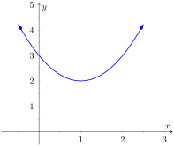
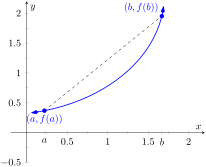
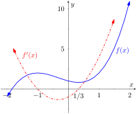
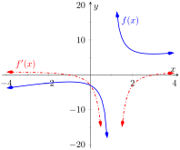
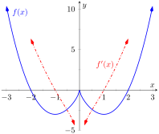

Our study of “nice” functions \(f\) in this chapter has so far focused on individual points: points where \(f\) is maximal/minimal, points where \(\fp(x) = 0\) or \(\fp\) does not exist, and points \(c\) where \(\fp(c)\) is the average rate of change of \(f\) on some interval.
In this section we begin to study how functions behave between special points; we begin studying in more detail the shape of their graphs.
We start with an intuitive concept. Given the graph in Figure 3.3.1, where would you say the function is increasing? Decreasing? Even though we have not defined these terms mathematically, one likely answered that \(f\) is increasing when \(x \gt 1\) and decreasing when \(x\lt 1\text{.}\) We formally define these terms here.

Figure3.3.1.A graph of a function \(f\) used to illustrate the concepts of increasing and decreasing
Definition3.3.2.Increasing and Decreasing Functions.
Let \(f\) be a function defined on an interval \(I\text{.}\)
\(f\) is increasing on \(I\) if for every \(a\lt b\) in \(I\text{,}\)\(f(a) \lt f(b)\text{.}\)
\(f\) is decreasing on \(I\) if for every \(a\lt b\) in \(I\text{,}\)\(f(a) \gt f(b)\text{.}\)
Informally, a function is increasing if as \(x\) gets larger (i.e., looking left to right) \(f(x)\) gets larger.
Our interest lies in finding intervals in the domain of \(f\) on which \(f\) is either increasing or decreasing. Such information should seem useful. For instance, if \(f\) describes the speed of an object, we might want to know when the speed was increasing or decreasing (i.e., when the object was accelerating vs. decelerating). If \(f\) describes the population of a city, we should be interested in when the population is growing or declining.
To find such intervals, we again consider secant lines. Let \(f\) be an increasing, differentiable function on an open interval \(I\text{,}\) such as the one shown in Figure 3.3.4, and let \(a\lt b\) be given in \(I\text{.}\) The secant line on the graph of \(f\) from \(x=a\) to \(x=b\) is drawn; it has a slope of \((f(b)-f(a))/(b-a)\text{.}\)
But note, since \(b \gt a\) and \(f\) is increasing, \(f(b) \gt f(a)\text{.}\) And these facts imply \(b-a \gt 0\) and \(f(b)-f(a) \gt 0\text{.}\) Therefore:
\begin{align*}
\amp\frac{f(b)-f(a)}{b-a} \gt 0\\
\implies\amp \text{slope of the secant line} \gt 0\\
\implies\amp \text{Average rate of change of }f\\
\amp\text{ on }[a,b]\text{ is } \gt 0\text{.}
\end{align*}

Figure3.3.4.Examining the secant line of an increasing function
We have shown mathematically what may have already been obvious: when \(f\) is increasing, its secant lines will have a positive slope. Now recall the Mean Value Theorem 3.2.4 guarantees that there is a number \(c\text{,}\) where \(a\lt c\lt b\text{,}\) such that
By considering all such secant lines in \(I\text{,}\) we strongly imply that \(\fp(x) \gt 0\) on \(I\text{.}\) A similar statement can be made for decreasing functions.
Our above logic can be summarized as “If \(f\) is increasing, then \(\fp\) is probably positive.” Theorem 3.3.5 below turns this around by stating “If \(\fp\) is positive, then \(f\) is increasing.” This leads us to a method for finding when functions are increasing and decreasing.
Theorem3.3.5.Test For Increasing/Decreasing Functions.
Let \(f\) be a continuous function on \([a,b]\) and differentiable on \((a,b)\text{.}\)
If \(\fp(c) \gt 0\) for all \(c\) in \((a,b)\text{,}\) then \(f\) is increasing on \([a,b]\text{.}\)
If \(\fp(c) \lt 0\) for all \(c\) in \((a,b)\text{,}\) then \(f\) is decreasing on \([a,b]\text{.}\)
If \(\fp(c) =0\) for all \(c\) in \((a,b)\text{,}\) then \(f\) is constant on \([a,b]\text{.}\)
The conclusions of Item 1 and Item 2 also hold if \(\fp(c) = 0\) for a finite number of nonadjacent values of \(c\) in \(I\text{.}\)
Let \(f\) be differentiable on an interval \(I\) and let \(a\) and \(b\) be in \(I\) where \(\fp(a) \gt 0\) and \(\fp(b)\lt 0\text{.}\) If \(\fp\) is continuous on \([a,b]\text{,}\) it follows from the Intermediate Value Theorem that there must be some value \(c\) between \(a\) and \(b\) where \(\fp(c) = 0\text{.}\) (It turns out that this is still true even if \(\fp\) is not continuous on \([a,b]\text{.}\)) This leads us to the following method for finding intervals on which a function is increasing or decreasing.
Key Idea3.3.7.Finding Intervals on Which \(f\) is Increasing or Decreasing.
Let \(f\) be a differentiable function on an interval \(I\text{.}\) To find intervals on which \(f\) is increasing and decreasing:
If not stated, find the domain of \(f\text{,}\)\(D\text{.}\) Begin a number line that only includes \(D\text{.}\)
Find the critical values of \(f\text{.}\) That is, find all \(c\) in the domain of \(f\) where \(\fp(c) = 0\) or \(\fp\) is not defined. (Note: Any values of \(c\)not in the domain of \(f\) where \(\fp(c)\) is undefined should already be marked on your number line from Step 1).
Use the critical values to divide \(D\) into subintervals.
Pick any point \(p\) in each subinterval, and find the sign of \(\fp(p)\text{.}\)
If \(\fp(p) \gt 0\text{,}\) then \(f\) is increasing on that subinterval.
If \(\fp(p)\lt 0\text{,}\) then \(f\) is decreasing on that subinterval.
Note that although Theorem 3.3.5 allows us to use determine that a function is increasing or decreasing on a closed interval, it is conventional to state the intervals of increase and decrease as open intervals. We will follow this convention in the examples that follow, but it is also acceptable to answer using closed intervals.
In particular, one should note the following:
If \(\fp(x)\gt 0\) on \((a,b)\) and on \((b,c)\text{,}\) with \(\fp(b)=0\text{,}\) then we should say that \(f\) is increasing on \((a,c)\) (or on \([a,c]\)) — the zero of the derivative should be included.
If \(\fp(x)\gt 0\) on \((a,b)\) and on \((b,c)\text{,}\) but \(f(b)\) is undefined (or \(f\) is discontinuous at \(b\)), then we should not include the point \(b\) in our interval. Instead, we say that \(f\) is increasing on \((a,b)\) and \((b,c)\text{,}\) or on \([a,b)\) and \((b,c]\text{.}\)
We demonstrate using this process in the following example.
Example3.3.8.Finding intervals of increasing/decreasing.
Let \(f(x) = x^3+x^2-x+1\text{.}\) Find intervals on which \(f\) is increasing or decreasing.
Since an interval was not specified for us to consider, using Key Idea 3.3.7, the domain of \(f\) is \(\mathbb{R}\) or \((-\infty,\infty)\text{.}\) Next, we find the critical values of \(f\text{.}\) We have \(\fp(x) = 3x^2+2x-1 = (3x-1)(x+1)\text{,}\) so \(\fp(x) = 0\) when \(x=-1\) and when \(x=1/3\text{.}\)\(\fp\) is never undefined.
We thus break the domain (in this case the \((-\infty, \infty)\)) into three subintervals based on the two critical values we just found: \((-\infty,-1)\text{,}\)\((-1,1/3)\) and \((1/3,\infty)\text{.}\) This is shown in Figure 3.3.9.
We now pick a value \(p\) in each subinterval and find the sign of \(\fp(p)\text{.}\) All we care about is the sign, so we do not actually have to fully compute \(\fp(p)\text{;}\) pick “nice” values that make this simple.
Subinterval 1: \((-\infty,-1)\)
We (arbitrarily) pick \(p=-2\text{.}\) We can compute \(\fp(-2)\) directly: \(\fp(-2) = 3(-2)^2+2(-2)-1=7\gt 0\text{.}\) We conclude that \(f\) is increasing on \((-\infty,-1)\text{.}\)
Note we can arrive at the same conclusion without computation. For instance, we could choose \(p=-100\text{.}\) The first term in \(\fp(-100)\text{,}\) i.e., \(3(-100)^2\) is clearly positive and very large. The other terms are small in comparison, so we know \(\fp(-100)\gt 0\text{.}\) All we need is the sign.
Subinterval 2: \((-1,1/3)\)
We pick \(p=0\) since that value seems easy to deal with. \(\fp(0) = -1\lt 0\text{.}\) We conclude \(f\) is decreasing on \((-1,1/3)\text{.}\)
Subinterval 3: \((1/3,\infty)\)
Pick an arbitrarily large value for \(p\gt 1/3\) and note that \(\fp(p) =3p^2+2p-1 \gt 0\text{.}\) We conclude that \(f\) is increasing on \((1/3,\infty)\text{.}\)
Figure3.3.10.Completed number line for \(f\) in Example 3.3.8
We can verify our calculations by considering Figure 3.3.11, where \(f\) is graphed. The graph also presents \(\fp\text{;}\) note how \(\fp\gt 0\) when \(f\) is increasing and \(\fp\lt 0\) when \(f\) is decreasing.

Figure3.3.11.A graph of \(f(x)\) in Example 3.3.8, showing where \(f\) is increasing and decreasing
One is justified in wondering why so much work is done when the graph seems to make the intervals very clear. We give three reasons why the above work is worthwhile.
First, the points at which \(f\) switches from increasing to decreasing are not precisely known given a graph. The graph shows us something significant happens near \(x=-1\) and \(x=0.3\text{,}\) but we cannot determine exactly where from the graph.
One could argue that just finding critical values is important; once we know the significant points are \(x=-1\) and \(x=1/3\text{,}\) the graph shows the increasing/decreasing traits just fine. That is true. However, the technique prescribed here helps reinforce the relationship between increasing/decreasing and the sign of \(\fp\text{.}\) Once mastery of this concept (and several others) is obtained, one finds that either (a) just the critical points are computed and the graph shows all else that is desired, or (b) a graph is never produced, because determining increasing/decreasing using \(\fp\) is straightforward and the graph is unnecessary. So our second reason why the above work is worthwhile is this: once mastery of a subject is gained, one has options for finding needed information. We are working to develop mastery.
Finally, our third reason: many problems we face “in the real world” are very complex. Solutions are tractable only through the use of computers to do many calculations for us. Computers do not solve problems “on their own,” however; they need to be taught (i.e., programmed) to do the right things. It would be beneficial to give a function to a computer and have it return maximum and minimum values, intervals on which the function is increasing and decreasing, the locations of relative maxima, etc. The work that we are doing here is easily programmable. It is hard to teach a computer to “look at the graph and see if it is going up or down.” It is easy to teach a computer to “determine if a number is greater than or less than \(0\text{.}\)”
In Section 3.1 we learned the definition of relative maxima and minima and found that they occur at critical points. We are now learning that functions can switch from increasing to decreasing (and vice-versa) at critical points. This new understanding of increasing and decreasing creates a great method of determining whether a critical point corresponds to a maximum, minimum, or neither. Imagine a function increasing until a critical point at \(x=c\text{,}\) after which it decreases. A quick sketch helps confirm that \(f(c)\) must be a relative maximum. A similar statement can be made for relative minimums. We formalize this concept in a theorem.
Theorem3.3.12.First Derivative Test.
Let \(f\) be continuous on an interval \(I\text{,}\) and differentiable on \(I\text{,}\) except possibly at \(c\text{,}\) where \(c\) is a critical number in \(I\text{.}\)
If the sign of \(\fp\) switches from positive to negative at \(c\text{,}\) then \(f(c)\) is a relative maximum of \(f\text{.}\)
If the sign of \(\fp\) switches from negative to positive at \(c\text{,}\) then \(f(c)\) is a relative minimum of \(f\text{.}\)
If \(\fp\) is positive (or, negative) before and after \(c\text{,}\) then \(f(c)\) is not a relative extrema of \(f\text{.}\)
The continuity of \(f\) when using the first derivative test is very important. Without continuity, almost anything can happen at a critical number. For example, we can construct a piecewise function where the sign of \(\fp\) switches to positive to negative at \(c\) and \(f(c)\) is not a local maximum. This is shown in Figure 3.3.15.
Figure3.3.15.A discontinuous function where \(\fp\) changes sign at 1, but \(f(1)\) is not a local maximum
Example3.3.16.Using the First Derivative Test.
Find the intervals on which \(f\) is increasing and decreasing, and use the First Derivative Test 3.3.12 to determine the relative extrema of \(f\text{,}\) where
We start by noting the domain of \(f\text{:}\)\((-\infty,1)\cup(1,\infty)\text{.}\)
Since \(f\) is not defined at \(x=1\) (it has a vertical asymptote), the increasing/decreasing nature of \(f\) could switch at this value. We know that \(\fp(1)\) will be undefined since \(f\) is discontinuous at \(1\text{.}\) We do not formally consider \(x=1\) to be a critical value of \(f\text{,}\) but we will use \(1\) to subdivide the real number line.
We need to find the critical values of \(f\text{;}\) we want to know when \(\fp(x)=0\) and when \(\fp\) is not defined. That latter is straightforward: when the denominator of \(\fp(x)\) is \(0\text{,}\)\(\fp\) is undefined. That occurs when \(x=1\text{,}\) which we've already recognized as an important value, but not a critical number.
\(\fp(x)=0\) when the numerator of \(\fp(x)\) is \(0\text{.}\) That occurs when \(x^2-2x-3 = (x-3)(x+1) = 0\text{;}\) i.e., when \(x=-1,3\text{.}\)
We have found that \(f\) has two critical numbers, \(x=-1,3\text{,}\) and at \(x=1\) something important might also happen. These three numbers divide the real number line into four subintervals:
\begin{equation*}
(-\infty,-1), (-1, 1), (1,3), \text{ and } (3,\infty)\text{.}
\end{equation*}
Pick a number \(p\) from each subinterval and test the sign of \(\fp\) at \(p\) to determine whether \(f\) is increasing or decreasing on that interval. Again, we do well to avoid complicated computations; notice that the denominator of \(\fp\) is always positive so we can ignore it during our work.
Interval 1: \((-\infty,-1)\)
Choosing a very small number (i.e., a negative number with a large magnitude) \(p\) returns \(p^2-2p-3\) in the numerator of \(\fp\text{;}\) that will be positive. Hence \(f\) is increasing on \((-\infty,-1)\text{.}\)
Interval 2: \((-1,1)\)
Choosing \(0\) seems simple: \(\fp(0)=-3\lt 0\text{.}\) We conclude \(f\) is decreasing on \((-1,1)\text{.}\)
Choosing an very large number \(p\) from this subinterval will give a positive numerator and (of course) a positive denominator. So \(f\) is increasing on \((3,\infty)\text{.}\)
In summary, \(f\) is increasing on the intervals \((-\infty,-1)\) and \((3,\infty)\) and is decreasing on the intervals \((-1,1)\) and \((1,3)\text{.}\) Since at \(x=-1\text{,}\) the sign of \(\fp\) switched from positive to negative, Theorem 3.3.12 states that \(f(-1)\) is a relative maximum of \(f\text{.}\) At \(x=3\text{,}\) the sign of \(\fp\) switched from negative to positive, meaning \(f(3)\) is a relative minimum. At \(x=1\text{,}\)\(f\) is not defined, so there is no relative extremum at \(x=1\text{.}\) As previously stated, \(x=1\) is a vertical asymptote of \(f\text{.}\)
This is summarized in the number line shown in Figure 3.3.17. Also, Figure 3.3.18 shows a graph of \(f\text{,}\) confirming our calculations. This figure also shows \(\fp\text{,}\) again demonstrating that \(f\) is increasing when \(\fp\gt 0\) and decreasing when \(\fp\lt 0\text{.}\)

Figure3.3.18.A graph of \(f(x)\) in Example 3.3.16, showing where \(f\) is increasing and decreasing
One is often tempted to think that functions always alternate “increasing, decreasing, increasing, decreasing,…” around critical values. Our previous example demonstrated that this is not always the case. While \(x=1\) was not technically a critical value, it was an important value we needed to consider. We found that \(f\) was decreasing on “both sides of \(x=1\text{.}\)”
We examine one more example.
Example3.3.19.Using the First Derivative Test.
Find the intervals on which \(f(x) = x^{8/3}-4x^{2/3}\) is increasing and decreasing and identify the relative extrema.
The domain of \(f\) is \(\mathbb{R}\) (you can take the odd root of both positive and negative nubmers). Next, we take the first derivative. Since we know we want to solve \(\fp(x) = 0\text{,}\) we will do some algebra after taking the derivative.
This derivation of \(\fp\) shows that \(\fp(x) = 0\) when \(x=\pm 1\) and \(\fp\)is not defined when \(x=0\text{.}\) Thus we have three critical values, breaking the number line into four subintervals as shown in Figure 3.3.20.
Interval 1: \((\infty,-1)\)
We choose \(p=-2\text{;}\) we can easily verify that \(\fp(-2)\lt 0\text{.}\) So \(f\) is decreasing on \((-\infty,-1)\text{.}\)
Interval 2: \((-1,0)\)
Choose \(p=-1/2\text{.}\) Once more we practice finding the sign of \(\fp(p)\) without computing an actual value. We have \(\fp(p) = (8/3)p^{-1/3}(p-1)(p+1)\text{;}\) find the sign of each of the three terms at the chosen value of \(p\text{.}\)
We conclude by stating that \(f\) is increasing on the intervals \((-1,0)\) and \((1,\infty)\) and decreasing on the intervals \((-\infty,-1)\) and \((0,1)\text{.}\) The sign of \(\fp\) changes from negative to positive around \(x=-1\) and \(x=1\text{,}\) meaning by Theorem 3.3.12 that \(f(-1)\) and \(f(1)\) are relative minima of \(f\text{.}\) As the sign of \(\fp\) changes from positive to negative at \(x=0\text{,}\) we have a relative maximum at \(f(0)\text{.}\)Figure 3.3.21 shows a graph of \(f\text{,}\) confirming our result. We also graph \(\fp\text{,}\) highlighting once more that \(f\) is increasing when \(\fp\gt 0\) and is decreasing when \(\fp\lt 0\text{.}\)

Figure3.3.21.A graph of \(f(x)\) in Example 3.3.19, showing where \(f\) is increasing and decreasing
We have seen how the first derivative of a function helps determine when the graph of a function is going “up” or “down.” In the next section, we will see how the second derivative helps determine how the graph of a function curves.
ExercisesExercises
Terms and Concepts
1.
In your own words describe what it means for a function to be increasing.
2.
What does a decreasing function “look like”?
3.
Sketch a graph of a function on \([0,2]\) that is increasing, where it is increasing “quickly” near \(x=0\) and increasing “slowly” near \(x=2\text{.}\)
4.
Give an example of a function describing a situation where it is “bad” to be increasing and “good” to be decreasing.
5.
True
False
Functions always switch from increasing to decreasing, or decreasing to increasing, at critical points.
6.
A function \(f\) has derivative \(\fp(x) = (\sin x +2)e^{x^2+1}\text{,}\) where \(\fp(x) \gt 1\) for all \(x\text{.}\) Is \(f\) increasing, decreasing, or can we not tell from the given information? Why or why not?
Problems
Exercise Group.
A function \(f(x)\) is given. Graph \(f\) and \(\fp\) on the same axes (using technology is permitted) and verify Theorem 3.3.5.
7.
\(f(x) = 2x+3\)
8.
\(f(x) = x^2-3x+5\)
9.
\(f(x) = \cos(x)\)
10.
\(f(x) = \tan(x)\)
11.
\(f(x) = x^3-5x^2+7x-1\)
12.
\(f(x) = 2x^3-x^2+x-1\)
13.
\(f(x) = x^4-5x^2+4\)
14.
\(f(x) = \frac{1}{x^2+1}\)
Exercise Group.
A function \(f(x)\) is given.
Give the domain of \(f\text{.}\)
Find the critical numbers of \(f\text{.}\)
Create a number line to determine the maximal intervals on which \(f\) is increasing and decreasing.
Use the First Derivative Test to determine whether each critical point is a relative maximum, minimum, or neither.